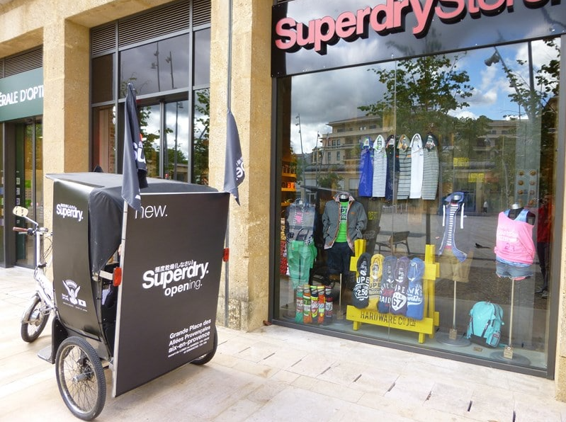
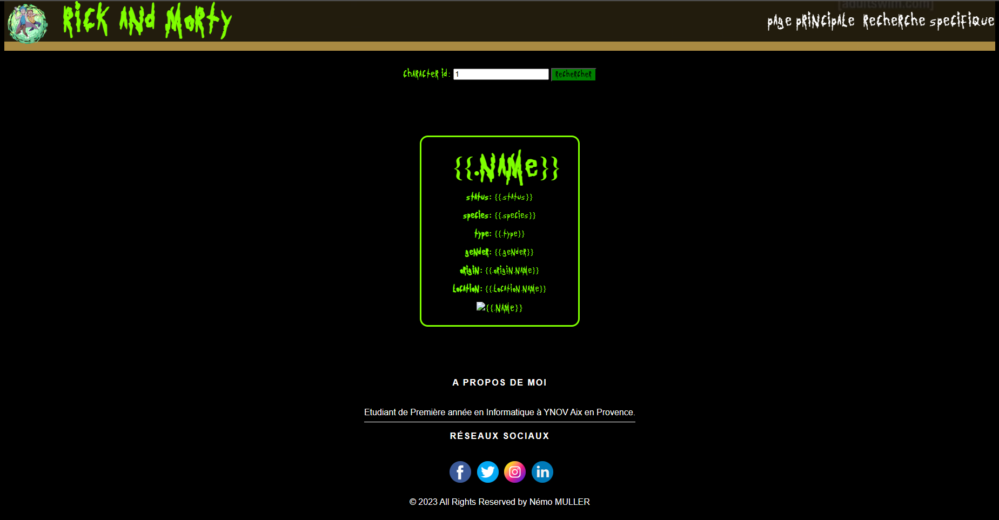

Bienvenue dans la section dédiée à mes réalisations.
Ici, je vous présente un éventail de projets sur lesquels j'ai travaillé, reflétant mes compétences, ma passion et mon évolution en tant que développeur informatique.
Chaque projet est le témoin de mon engagement, de ma curiosité et de mon désir constant d'apprendre et de m'améliorer !

Stage de première de année
J'ai eu l'opportunité d'effectuer un stage chez Superdry à Aix-en-Provence. Cette expérience m'a permis d'apprendre les ficelles de la vente et de comprendre l'importance de la relation client.Au-delà des produits vestimentaires, j'ai saisi l'essence de la persuasion, de la présentation et de la valorisation d'un produit. Ces compétences, je crois fermement, me seront bénéfiques dans le futur en tant que développeur.
Si un jour je conçois une application, je possède désormais les outils nécessaires pour la mettre en avant et la vendre efficacement.
Le zoo en Javascript
Dans le cadre d'un projet scolaire, j'ai eu l'occasion de créer un site web dédié à un zoo. Ce projet ne fut pas seulement un exercice académique, mais également une plongée profonde dans l'univers du développement web, et plus précisément du JavaScript.Tout au long de cette réalisation, j'ai pu explorer diverses fonctionnalités, optimiser l'interactivité du site, et m'immerger dans les nuances du monde du web.
Cette expérience m'a conforté dans ma passion pour le développement et renforcé mes compétences, me préparant à relever de nouveaux défis dans ce domaine.


Pendu Web
La conception d'un jeu de pendu, entièrement développé en Go. Golang, m'a offert une perspective rafraîchissante sur la programmation et m'a permis d'approfondir ma compréhension des logiques de jeu.Mais le défi ne s'est pas arrêté là : pour rendre le jeu accessible à tous, je l'ai hébergé sur un site web. Cela m'a poussé à intégrer mes connaissances en développement web avec les spécificités du langage Go, créant ainsi une expérience utilisateur fluide et engageante.
Ce projet a non seulement renforcé mes compétences techniques, mais m'a également enseigné l'importance de l'accessibilité et de l'interaction dans le monde du développement des jeux.
L'utilisation d'API avec Rick & Morty
J'ai récemment travaillé sur un projet passionnant : un site web dédié à l'univers de Rick et Morty. L'objectif principal était d'interagir avec une API externe pour récupérer des informations sur les personnages.L'utilisateur entre simplement l'ID d'un personnage et se voit présenter tous les détails pertinents à son sujet. Cette réalisation m'a permis d'approfondir mes compétences en matière d'intégration d'APIs et de traitement de données en temps réel.
Tout au long du projet, j'ai été confronté à divers défis, comme assurer une réponse fluide du site et optimiser l'affichage des informations. Au-delà de la technique, ce projet m'a également permis d'allier ma passion pour le développement web à mon intérêt pour la pop culture, en l'occurrence, le monde fascinant de Rick et Morty.

© 2023 All Rights Reserved by Némo MULLER